🚲 Lane data QA — aerial review
2767 network sites audited against MassGIS 15 cm orthoimagery
(2023 vs 2025): 2119 ok, 144 changed,
139 without visible markings,
0 without imagery. 2767 of the deduped facility sites audited; rerun with --max-sites to extend (tiles are cached)
These are heuristic flags for human review — confirm with the linked
street-level photos, then record real changes in
data/overrides.geojson (class overrides feed the router directly).
🔀 markings changed 2023 → 2025 unnamed — lane (source: osm)
2023 2025 green 0.0 → 0.0 · white 0.0 → 0.2231
🔀 markings changed 2023 → 2025 unnamed — path (source: osm)
2023 2025 green 0.0 → 0.0 · white 0.0688 → 0.3739
🔀 markings changed 2023 → 2025 unnamed — path (source: osm)
2023 2025 green 0.0 → 0.0 · white 0.0002 → 0.3573
🔀 markings changed 2023 → 2025 unnamed — path (source: osm)
2023 2025 green 0.0 → 0.0 · white 0.0358 → 0.3348
🔀 markings changed 2023 → 2025 unnamed — path (source: osm)
2023 2025 green 0.0 → 0.0 · white 0.0045 → 0.2491
🔀 markings changed 2023 → 2025 unnamed — path (source: osm)
2023 2025 green 0.0 → 0.0 · white 0.0408 → 0.3941
🔀 markings changed 2023 → 2025 unnamed — path (source: osm)
2023 2025 green 0.0 → 0.0 · white 0.1347 → 0.3713
🔀 markings changed 2023 → 2025 unnamed — path (source: osm)
2023 2025 green 0.0033 → 0.0 · white 0.1852 → 0.4223
🔀 markings changed 2023 → 2025 unnamed — path (source: osm)
2023 2025 green 0.0 → 0.0 · white 0.0664 → 0.3862
🔀 markings changed 2023 → 2025 unnamed — path (source: osm)
2023 2025 green 0.0 → 0.0 · white 0.0292 → 0.3531
🔀 markings changed 2023 → 2025 unnamed — path (source: osm)
2023 2025 green 0.0 → 0.0 · white 0.3784 → 0.0
🔀 markings changed 2023 → 2025 unnamed — path (source: osm)
2023 2025 green 0.0002 → 0.0 · white 0.0559 → 0.3141
🔀 markings changed 2023 → 2025 unnamed — path (source: osm)
2023 2025 green 0.0002 → 0.0 · white 0.0941 → 0.3981
🔀 markings changed 2023 → 2025 unnamed — path (source: osm)
2023 2025 green 0.0 → 0.0 · white 0.0091 → 0.2527
🔀 markings changed 2023 → 2025 unnamed — path (source: osm)
2023 2025 green 0.0 → 0.0 · white 0.0 → 0.2625
🔀 markings changed 2023 → 2025 unnamed — path (source: osm)
2023 2025 green 0.0064 → 0.0 · white 0.003 → 0.2956
🔀 markings changed 2023 → 2025 unnamed — path (source: osm)
2023 2025 green 0.0 → 0.0 · white 0.0 → 0.2834
🔀 markings changed 2023 → 2025 unnamed — path (source: osm)
2023 2025 green 0.0 → 0.0 · white 0.0 → 0.4166
🔀 markings changed 2023 → 2025 unnamed — path (source: osm)
2023 2025 green 0.0 → 0.0 · white 0.0028 → 0.2314
🔀 markings changed 2023 → 2025 unnamed — path (source: osm)
2023 2025 green 0.0 → 0.0 · white 0.1366 → 0.3573
🔀 markings changed 2023 → 2025 unnamed — path (source: osm)
2023 2025 green 0.0008 → 0.0 · white 0.0873 → 0.3491
🔀 markings changed 2023 → 2025 unnamed — path (source: osm)
2023 2025 green 0.0 → 0.0 · white 0.0302 → 0.3144
🔀 markings changed 2023 → 2025 unnamed — path (source: osm)
2023 2025 green 0.0005 → 0.0 · white 0.017 → 0.2406
🔀 markings changed 2023 → 2025 unnamed — path (source: osm)
2023 2025 green 0.0 → 0.0 · white 0.0088 → 0.3787
🔀 markings changed 2023 → 2025 unnamed — path (source: osm)
2023 2025 green 0.0 → 0.0 · white 0.0 → 0.2886
🔀 markings changed 2023 → 2025 unnamed — path (source: osm)
2023 2025 green 0.0 → 0.0 · white 0.0125 → 0.2777
🔀 markings changed 2023 → 2025 unnamed — path (source: osm)
2023 2025 green 0.0 → 0.0 · white 0.0208 → 0.3647
🔀 markings changed 2023 → 2025 unnamed — path (source: osm)
2023 2025 green 0.0009 → 0.0 · white 0.0425 → 0.3009
🔀 markings changed 2023 → 2025 unnamed — path (source: osm)
2023 2025 green 0.0 → 0.0 · white 0.1192 → 0.3761
🔀 markings changed 2023 → 2025 A Street — separated (source: osm)
2023 2025 green 0.0 → 0.0 · white 0.0772 → 0.3347
🔀 markings changed 2023 → 2025 Acorn Park Drive — lane (source: osm)
2023 2025 green 0.0 → 0.0 · white 0.1386 → 0.4113
🔀 markings changed 2023 → 2025 Acorn Park Drive — lane (source: osm)
2023 2025 green 0.0 → 0.0 · white 0.1017 → 0.3816
🔀 markings changed 2023 → 2025 Albany Street — path (source: osm)
2023 2025 green 0.0 → 0.0 · white 0.0481 → 0.3408
🔀 markings changed 2023 → 2025 Alford Street — separated (source: osm)
2023 2025 green 0.0 → 0.0 · white 0.0037 → 0.3911
🔀 markings changed 2023 → 2025 Ames Street — separated (source: osm)
2023 2025 green 0.0 → 0.0 · white 0.0 → 0.3183
🔀 markings changed 2023 → 2025 Atlantic Avenue — lane (source: osm)
2023 2025 green 0.1013 → 0.0 · white 0.0 → 0.0742
🔀 markings changed 2023 → 2025 Bartlett Street — lane (source: osm)
2023 2025 green 0.0 → 0.0 · white 0.0008 → 0.2827
🔀 markings changed 2023 → 2025 Beacham Street — lane (source: osm)
2023 2025 green 0.0 → 0.0 · white 0.0945 → 0.3783
🔀 markings changed 2023 → 2025 Beacham Street — lane (source: osm)
2023 2025 green 0.0 → 0.0 · white 0.05 → 0.2798
🔀 markings changed 2023 → 2025 Beacham Street — lane (source: osm)
2023 2025 green 0.0 → 0.0 · white 0.0428 → 0.3108
🔀 markings changed 2023 → 2025 Beacon Street — separated (source: osm)
2023 2025 green 0.0 → 0.0 · white 0.0777 → 0.4347
🔀 markings changed 2023 → 2025 Berkeley Street — separated (source: osm)
2023 2025 green 0.0 → 0.0 · white 0.0 → 0.347
🔀 markings changed 2023 → 2025 Bow Street — lane (source: osm)
2023 2025 green 0.0 → 0.0 · white 0.1459 → 0.4294
🔀 markings changed 2023 → 2025 Bow Street — lane (source: osm)
2023 2025 green 0.0 → 0.0 · white 0.0964 → 0.3414
🔀 markings changed 2023 → 2025 Boylston Street — path (source: osm)
2023 2025 green 0.0 → 0.0 · white 0.0134 → 0.3347
🔀 markings changed 2023 → 2025 Broadway — lane (source: osm)
2023 2025 green 0.0 → 0.0 · white 0.038 → 0.4317
🔀 markings changed 2023 → 2025 Broadway — lane (source: osm)
2023 2025 green 0.0 → 0.0 · white 0.0425 → 0.2895
🔀 markings changed 2023 → 2025 Broadway — lane (source: osm)
2023 2025 green 0.0 → 0.0 · white 0.1439 → 0.3783
🔀 markings changed 2023 → 2025 Broadway — separated (source: osm)
2023 2025 green 0.0 → 0.0 · white 0.0 → 0.3311
🔀 markings changed 2023 → 2025 Calvin Street — lane (source: osm)
2023 2025 green 0.0539 → 0.0005 · white 0.1773 → 0.0736
🔀 markings changed 2023 → 2025 Cameron Avenue — lane (source: osm)
2023 2025 green 0.0013 → 0.0 · white 0.1439 → 0.4228
🔀 markings changed 2023 → 2025 Cameron Avenue — lane (source: osm)
2023 2025 green 0.0 → 0.0 · white 0.0288 → 0.2547
🔀 markings changed 2023 → 2025 Causeway Street — separated (source: osm)
2023 2025 green 0.0034 → 0.1778 · white 0.0628 → 0.0309
🔀 markings changed 2023 → 2025 Chelsea Street — lane (source: osm)
2023 2025 green 0.0 → 0.0 · white 0.0453 → 0.2914
🔀 markings changed 2023 → 2025 Chestnut Hill Avenue — lane (source: osm)
2023 2025 green 0.0 → 0.0 · white 0.0552 → 0.3864
🔀 markings changed 2023 → 2025 Clippership Connector — path (source: osm)
2023 2025 green 0.0 → 0.0 · white 0.1223 → 0.3939
🔀 markings changed 2023 → 2025 Clippership Drive — lane (source: osm)
2023 2025 green 0.0 → 0.0 · white 0.0719 → 0.3459
🔀 markings changed 2023 → 2025 College Avenue — lane (source: osm)
2023 2025 green 0.0 → 0.0 · white 0.0781 → 0.4406
🔀 markings changed 2023 → 2025 Columbus Avenue — lane (source: osm)
2023 2025 green 0.0 → 0.0 · white 0.0184 → 0.3278
🔀 markings changed 2023 → 2025 Commercial Street — path (source: osm)
2023 2025 green 0.0095 → 0.0 · white 0.0005 → 0.3758
🔀 markings changed 2023 → 2025 Common Street — lane (source: osm)
2023 2025 green 0.0 → 0.0 · white 0.0041 → 0.2798
🔀 markings changed 2023 → 2025 Concord Avenue — separated (source: osm)
2023 2025 green 0.0 → 0.0 · white 0.0933 → 0.3625
🔀 markings changed 2023 → 2025 Concord Avenue — separated (source: osm)
2023 2025 green 0.0 → 0.0 · white 0.1027 → 0.4253
🔀 markings changed 2023 → 2025 Concord Avenue — lane (source: osm)
2023 2025 green 0.0 → 0.0 · white 0.0659 → 0.3069
🔀 markings changed 2023 → 2025 Coolidge Avenue — lane (source: cambridge)
2023 2025 green 0.0406 → 0.0 · white 0.0195 → 0.0119
🔀 markings changed 2023 → 2025 Cutter Avenue — lane (source: osm)
2023 2025 green 0.0 → 0.0 · white 0.1142 → 0.3887
🔀 markings changed 2023 → 2025 Cutter Avenue — lane (source: osm)
2023 2025 green 0.0 → 0.0 · white 0.0436 → 0.3084
🔀 markings changed 2023 → 2025 Dalton Street — separated (source: osm)
2023 2025 green 0.0005 → 0.0 · white 0.3016 → 0.003
🔀 markings changed 2023 → 2025 Dorchester Avenue — lane (source: osm)
2023 2025 green 0.0041 → 0.0 · white 0.0095 → 0.2427
🔀 markings changed 2023 → 2025 Dr. Paul Dudley White Path — path (source: osm)
2023 2025 green 0.0 → 0.0 · white 0.0436 → 0.418
🔀 markings changed 2023 → 2025 Eliot Street — lane (source: osm)
2023 2025 green 0.0 → 0.0 · white 0.0702 → 0.4297
🔀 markings changed 2023 → 2025 Encore Riverwalk — path (source: osm)
2023 2025 green 0.0955 → 0.0009 · white 0.0006 → 0.3453
🔀 markings changed 2023 → 2025 Everett Riverwalk — path (source: osm)
2023 2025 green 0.0 → 0.0 · white 0.0277 → 0.4405
🔀 markings changed 2023 → 2025 Everett Street — lane (source: osm)
2023 2025 green 0.0 → 0.0 · white 0.0614 → 0.3453
🔀 markings changed 2023 → 2025 Fitchburg Cutoff Path — path (source: osm)
2023 2025 green 0.0 → 0.0 · white 0.0 → 0.3589
🔀 markings changed 2023 → 2025 Foley Street — separated (source: osm)
2023 2025 green 0.0 → 0.0 · white 0.0 → 0.3322
🔀 markings changed 2023 → 2025 Fresh Pond Path — path (source: osm)
2023 2025 green 0.0 → 0.0 · white 0.1397 → 0.4133
🔀 markings changed 2023 → 2025 Grand Union Boulevard — separated (source: osm)
2023 2025 green 0.0 → 0.0 · white 0.0055 → 0.3787
🔀 markings changed 2023 → 2025 Grand Union Boulevard — separated (source: osm)
2023 2025 green 0.0 → 0.0 · white 0.0592 → 0.358
🔀 markings changed 2023 → 2025 Green Street — path (source: osm)
2023 2025 green 0.0 → 0.0 · white 0.1053 → 0.3416
🔀 markings changed 2023 → 2025 Guest Street — separated (source: massdot)
2023 2025 green 0.0 → 0.0 · white 0.0397 → 0.3128
🔀 markings changed 2023 → 2025 Hampshire Street — separated (source: osm)
2023 2025 green 0.0 → 0.0 · white 0.415 → 0.057
🔀 markings changed 2023 → 2025 Holland Street — separated (source: osm)
2023 2025 green 0.0 → 0.0 · white 0.0366 → 0.3708
🔀 markings changed 2023 → 2025 Huron Avenue — separated (source: osm)
2023 2025 green 0.0 → 0.0 · white 0.0088 → 0.3144
🔀 markings changed 2023 → 2025 Huron Avenue — separated (source: cambridge)
2023 2025 green 0.0 → 0.0 · white 0.0627 → 0.3605
🔀 markings changed 2023 → 2025 Huron Avenue — buffered (source: cambridge)
2023 2025 green 0.0 → 0.0 · white 0.1325 → 0.4486
🔀 markings changed 2023 → 2025 Jacobs Street — lane (source: osm)
2023 2025 green 0.0 → 0.0 · white 0.0048 → 0.4114
🔀 markings changed 2023 → 2025 Krystyl K. Poirier Memorial Roadway — separated (source: massdot)
2023 2025 green 0.0 → 0.0 · white 0.0272 → 0.3047
🔀 markings changed 2023 → 2025 Lake Street — lane (source: osm)
2023 2025 green 0.0 → 0.0 · white 0.0086 → 0.3958
🔀 markings changed 2023 → 2025 Lakeview Avenue — lane (source: massdot)
2023 2025 green 0.0 → 0.0 · white 0.0245 → 0.292
🔀 markings changed 2023 → 2025 Leonard Street — lane (source: osm)
2023 2025 green 0.0003 → 0.0005 · white 0.0647 → 0.3314
🔀 markings changed 2023 → 2025 Main Street — separated (source: osm)
2023 2025 green 0.0759 → 0.0 · white 0.0 → 0.0486
🔀 markings changed 2023 → 2025 Main Street — lane (source: osm)
2023 2025 green 0.0 → 0.0 · white 0.0634 → 0.4359
🔀 markings changed 2023 → 2025 Massachusetts Avenue — separated (source: osm)
2023 2025 green 0.0 → 0.0006 · white 0.4252 → 0.0141
🔀 markings changed 2023 → 2025 Massachusetts Avenue — lane (source: osm)
2023 2025 green 0.0 → 0.0 · white 0.0905 → 0.407
🔀 markings changed 2023 → 2025 Massachusetts Avenue — lane (source: osm)
2023 2025 green 0.0 → 0.0 · white 0.3602 → 0.0703
🔀 markings changed 2023 → 2025 Massachusetts Avenue — lane (source: osm)
2023 2025 green 0.0 → 0.0 · white 0.0 → 0.3723
🔀 markings changed 2023 → 2025 Massachusetts Avenue — path (source: osm)
2023 2025 green 0.0 → 0.0055 · white 0.39 → 0.0266
🔀 markings changed 2023 → 2025 McGrath Highway — separated (source: osm)
2023 2025 green 0.0 → 0.0 · white 0.0223 → 0.255
🔀 markings changed 2023 → 2025 Memorial Drive — lane (source: cambridge)
2023 2025 green 0.0 → 0.0 · white 0.0 → 0.2816
🔀 markings changed 2023 → 2025 Middlesex Avenue — path (source: osm)
2023 2025 green 0.0 → 0.0 · white 0.1402 → 0.4331
🔀 markings changed 2023 → 2025 Milk Street — separated (source: osm)
2023 2025 green 0.0 → 0.0 · white 0.0678 → 0.3244
🔀 markings changed 2023 → 2025 Minuteman Bikeway — path (source: osm)
2023 2025 green 0.0 → 0.0 · white 0.4392 → 0.1539
🔀 markings changed 2023 → 2025 Mount Auburn Street — lane (source: osm)
2023 2025 green 0.0 → 0.0 · white 0.0192 → 0.3267
🔀 markings changed 2023 → 2025 Mount Auburn Street — separated (source: osm)
2023 2025 green 0.0 → 0.0 · white 0.0919 → 0.4169
🔀 markings changed 2023 → 2025 Mount Auburn Street — path (source: osm)
2023 2025 green 0.0072 → 0.0 · white 0.0161 → 0.3645
🔀 markings changed 2023 → 2025 Mystic Street — lane (source: osm)
2023 2025 green 0.0 → 0.0 · white 0.1205 → 0.4091
🔀 markings changed 2023 → 2025 New Cypher Street — separated (source: osm)
2023 2025 green 0.0 → 0.0 · white 0.0712 → 0.3323
🔀 markings changed 2023 → 2025 North Beacon Street — separated (source: osm)
2023 2025 green 0.0 → 0.0 · white 0.0528 → 0.2916
🔀 markings changed 2023 → 2025 North Beacon Street — separated (source: osm)
2023 2025 green 0.0 → 0.0 · white 0.0459 → 0.4469
🔀 markings changed 2023 → 2025 North Beacon Street — lane (source: osm)
2023 2025 green 0.0 → 0.0 · white 0.0291 → 0.2794
🔀 markings changed 2023 → 2025 North Harvard Street — lane (source: osm)
2023 2025 green 0.0 → 0.0 · white 0.0572 → 0.3152
🔀 markings changed 2023 → 2025 North Square — path (source: osm)
2023 2025 green 0.0 → 0.0 · white 0.0231 → 0.4353
🔀 markings changed 2023 → 2025 Pleasant Street — lane (source: osm)
2023 2025 green 0.0008 → 0.0 · white 0.1108 → 0.4284
🔀 markings changed 2023 → 2025 Pleasant Street — lane (source: osm)
2023 2025 green 0.0 → 0.0 · white 0.0086 → 0.2744
🔀 markings changed 2023 → 2025 Pleasant Street — lane (source: osm)
2023 2025 green 0.0 → 0.0 · white 0.0141 → 0.3297
🔀 markings changed 2023 → 2025 Short Street — path (source: osm)
2023 2025 green 0.0036 → 0.0017 · white 0.1689 → 0.4372
🔀 markings changed 2023 → 2025 Somerville Avenue — lane (source: osm)
2023 2025 green 0.0011 → 0.0 · white 0.0312 → 0.3886
🔀 markings changed 2023 → 2025 Somerville Avenue — lane (source: osm)
2023 2025 green 0.0 → 0.0 · white 0.0478 → 0.3655
🔀 markings changed 2023 → 2025 Somerville Avenue — separated (source: osm)
2023 2025 green 0.0 → 0.0 · white 0.0748 → 0.44
🔀 markings changed 2023 → 2025 Somerville Community Path — path (source: osm)
2023 2025 green 0.0 → 0.0 · white 0.0695 → 0.3352
🔀 markings changed 2023 → 2025 Somerville Community Path — path (source: osm)
2023 2025 green 0.0013 → 0.0 · white 0.0 → 0.2822
🔀 markings changed 2023 → 2025 South Market Street — path (source: osm)
2023 2025 green 0.0037 → 0.0 · white 0.0066 → 0.3294
🔀 markings changed 2023 → 2025 South Street — lane (source: osm)
2023 2025 green 0.0 → 0.0 · white 0.0108 → 0.2752
🔀 markings changed 2023 → 2025 Swan Place — lane (source: osm)
2023 2025 green 0.0 → 0.0 · white 0.0628 → 0.3098
🔀 markings changed 2023 → 2025 Traveler Street — path (source: osm)
2023 2025 green 0.0 → 0.0 · white 0.0192 → 0.4422
🔀 markings changed 2023 → 2025 Tremont Street — separated (source: osm)
2023 2025 green 0.0 → 0.0 · white 0.0041 → 0.2289
🔀 markings changed 2023 → 2025 Vassar Street — separated (source: osm)
2023 2025 green 0.0067 → 0.0 · white 0.0063 → 0.3514
🔀 markings changed 2023 → 2025 Vassar Street — separated (source: osm)
2023 2025 green 0.0 → 0.0 · white 0.0017 → 0.3312
🔀 markings changed 2023 → 2025 Washington Street — lane (source: osm)
2023 2025 green 0.0 → 0.0 · white 0.1172 → 0.3597
🔀 markings changed 2023 → 2025 Washington Street — lane (source: osm)
2023 2025 green 0.0 → 0.0 · white 0.1494 → 0.4036
🔀 markings changed 2023 → 2025 Washington Street — lane (source: osm)
2023 2025 green 0.0 → 0.0 · white 0.0238 → 0.3128
🔀 markings changed 2023 → 2025 Washington Street — lane (source: osm)
2023 2025 green 0.0 → 0.0 · white 0.0045 → 0.228
🔀 markings changed 2023 → 2025 Watertown Community Path — path (source: osm)
2023 2025 green 0.0 → 0.0 · white 0.195 → 0.4244
🔀 markings changed 2023 → 2025 Western Avenue — separated (source: osm)
2023 2025 green 0.0 → 0.0 · white 0.0452 → 0.332
🔀 markings changed 2023 → 2025 Western Avenue — separated (source: osm)
2023 2025 green 0.0 → 0.0 · white 0.0909 → 0.3505
🔀 markings changed 2023 → 2025 Western Avenue — path (source: osm)
2023 2025 green 0.0 → 0.0 · white 0.1516 → 0.403
🔀 markings changed 2023 → 2025 Westland Avenue — path (source: osm)
2023 2025 green 0.0016 → 0.0 · white 0.0527 → 0.3802
🔀 markings changed 2023 → 2025 Wheeler Avenue — path (source: osm)
2023 2025 green 0.0 → 0.0 · white 0.3912 → 0.0873
🔀 markings changed 2023 → 2025 Willow Avenue — lane (source: osm)
2023 2025 green 0.0 → 0.0 · white 0.1167 → 0.337
🔀 markings changed 2023 → 2025 Winship Street — separated (source: osm)
2023 2025 green 0.0 → 0.0 · white 0.0364 → 0.3502
🔀 markings changed 2023 → 2025 Winthrop Street — lane (source: osm)
2023 2025 green 0.0 → 0.0 · white 0.0084 → 0.2348
🔀 markings changed 2023 → 2025 Winthrop Street — lane (source: osm)
2023 2025 green 0.0 → 0.0 · white 0.0075 → 0.3316
🔀 markings changed 2023 → 2025 Winthrop Street — lane (source: osm)
2023 2025 green 0.0 → 0.0 · white 0.0072 → 0.2297
❓ painted facility, no visible markings unnamed — lane (source: osm)
2023 2025 green 0.0 → 0.0 · white 0.0056 → 0.0003
❓ painted facility, no visible markings unnamed — lane (source: osm)
2023 2025 green 0.0156 → 0.0 · white 0.0053 → 0.0
❓ painted facility, no visible markings A Street — separated (source: osm)
2023 2025 green 0.0 → 0.0 · white 0.0 → 0.0
❓ painted facility, no visible markings Acorn Park Drive — lane (source: osm)
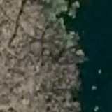
2023 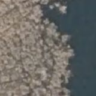
2025 green 0.0002 → 0.0 · white 0.0 → 0.003
❓ painted facility, no visible markings Alford Street — separated (source: osm)
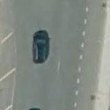
2023 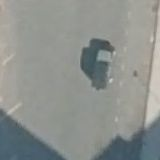
2025 green 0.0002 → 0.0 · white 0.0017 → 0.0025
❓ painted facility, no visible markings Arlington Street — separated (source: osm)
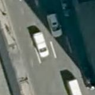
2023 2025 green 0.0017 → 0.0019 · white 0.1069 → 0.0009
❓ painted facility, no visible markings Arlington Street — separated (source: osm)
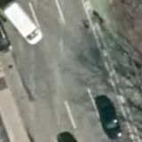
2023 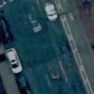
2025 green 0.0 → 0.0 · white 0.0141 → 0.0
❓ painted facility, no visible markings Arsenal Street — lane (source: osm)
2023 2025 green 0.0 → 0.0 · white 0.0116 → 0.0
❓ painted facility, no visible markings Atlantic Avenue — lane (source: osm)
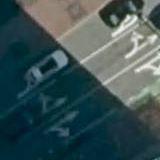
2023 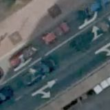
2025 green 0.0 → 0.0002 · white 0.0219 → 0.0
❓ painted facility, no visible markings Atlantic Avenue — lane (source: osm)
2023 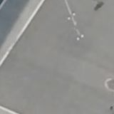
2025 green 0.0 → 0.0 · white 0.0036 → 0.0028
❓ painted facility, no visible markings Babcock Street — lane (source: osm)
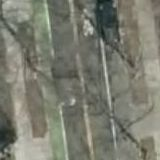
2023 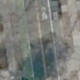
2025 green 0.0 → 0.0 · white 0.0147 → 0.0097
❓ painted facility, no visible markings Babcock Street — lane (source: osm)
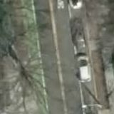
2023 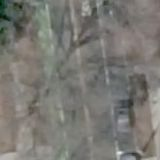
2025 green 0.0 → 0.0 · white 0.0334 → 0.0
❓ painted facility, no visible markings Beacon Street — lane (source: osm)
2023 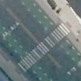
2025 green 0.028 → 0.0016 · white 0.0148 → 0.0037
❓ painted facility, no visible markings Beacon Street — separated (source: osm)
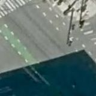
2023 2025 green 0.0066 → 0.0 · white 0.0119 → 0.0036
❓ painted facility, no visible markings Beacon Street — separated (source: osm)
green 0.0 → 0.0 · white 0.0011 → 0.0014
❓ painted facility, no visible markings Beacon Street — lane (source: osm)
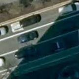
2023 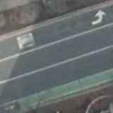
2025 green 0.0052 → 0.0 · white 0.0411 → 0.003
❓ painted facility, no visible markings Beacon Street — separated (source: osm)
2023 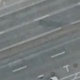
2025 green 0.0078 → 0.0 · white 0.0077 → 0.0002
❓ painted facility, no visible markings Belmont Street — lane (source: osm)
2023 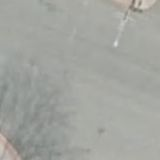
2025 green 0.0 → 0.0 · white 0.0 → 0.0138
❓ painted facility, no visible markings Belvidere Street — lane (source: osm)
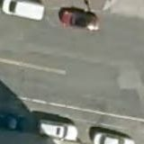
2023 2025 green 0.0 → 0.0014 · white 0.0147 → 0.0017
❓ painted facility, no visible markings Berkeley Street — separated (source: osm)
2023 2025 green 0.0 → 0.0013 · white 0.0053 → 0.0
❓ painted facility, no visible markings Berkeley Street — separated (source: osm)
green 0.0 → 0.0 · white 0.0484 → 0.0
❓ painted facility, no visible markings Blanchard Road — lane (source: osm)
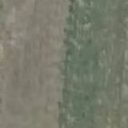
2023 2025 green 0.0 → 0.0 · white 0.0 → 0.0016
❓ painted facility, no visible markings Boylston Street — separated (source: osm)
2023 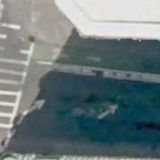
2025 green 0.005 → 0.0095 · white 0.0064 → 0.0109
❓ painted facility, no visible markings Boylston Street — separated (source: osm)
2023 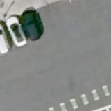
2025 green 0.0 → 0.0047 · white 0.0413 → 0.0
❓ painted facility, no visible markings Boylston Street — separated (source: osm)
2023 2025 green 0.0031 → 0.003 · white 0.0163 → 0.0
❓ painted facility, no visible markings Brighton Avenue — lane (source: osm)
2023 2025 green 0.0 → 0.0 · white 0.0242 → 0.0
❓ painted facility, no visible markings Broadway — lane (source: osm)
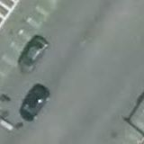
2023 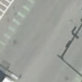
2025 green 0.0 → 0.0 · white 0.0023 → 0.0
❓ painted facility, no visible markings Broadway — separated (source: osm)
green 0.0 → 0.0 · white 0.0056 → 0.0116
❓ painted facility, no visible markings Broadway — lane (source: osm)
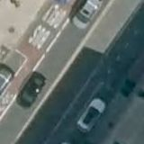
2023 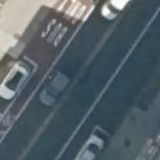
2025 green 0.0027 → 0.0 · white 0.0578 → 0.0
❓ painted facility, no visible markings Broadway — separated (source: osm)
2023 2025 green 0.0 → 0.0 · white 0.0492 → 0.0086
❓ painted facility, no visible markings Broadway — separated (source: osm)
2023 2025 green 0.0002 → 0.0 · white 0.1336 → 0.0023
❓ painted facility, no visible markings Brookline Street — lane (source: osm)
2023 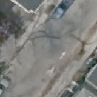
2025 green 0.0058 → 0.0 · white 0.0058 → 0.0109
❓ painted facility, no visible markings Brookline Street — lane (source: osm)
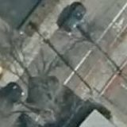
2023 2025 green 0.0 → 0.0 · white 0.0191 → 0.002
❓ painted facility, no visible markings Brookline Street — lane (source: osm)
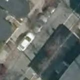
2023 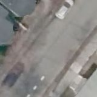
2025 green 0.0 → 0.0 · white 0.0723 → 0.0073
❓ painted facility, no visible markings Cambridge Street — separated (source: osm)
green 0.0017 → 0.0 · white 0.0081 → 0.0
❓ painted facility, no visible markings Cambridge Street — lane (source: osm)
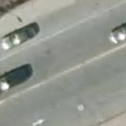
2023 2025 green 0.0 → 0.0 · white 0.0531 → 0.0053
❓ painted facility, no visible markings Cambridge Street — lane (source: osm)
2023 2025 green 0.0 → 0.0 · white 0.0817 → 0.008
❓ painted facility, no visible markings Cambridge Street — lane (source: osm)
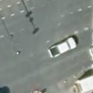
2023 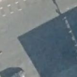
2025 green 0.0 → 0.0 · white 0.0636 → 0.0
❓ painted facility, no visible markings Cambridge Street — separated (source: osm)
green 0.0 → 0.0 · white 0.0 → 0.0
❓ painted facility, no visible markings Cambridge Street — separated (source: osm)
2023 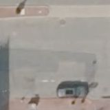
2025 green 0.0 → 0.0 · white 0.0069 → 0.0072
❓ painted facility, no visible markings Cambridge Street — separated (source: osm)
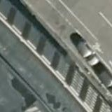
2023 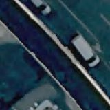
2025 green 0.0 → 0.0 · white 0.0587 → 0.0058
❓ painted facility, no visible markings Cambridgepark Drive — separated (source: osm)
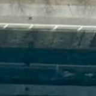
2023 2025 green 0.0 → 0.0 · white 0.0617 → 0.008
❓ painted facility, no visible markings Cambridgepark Drive — separated (source: osm)
2023 2025 green 0.0 → 0.0 · white 0.0695 → 0.0017
❓ painted facility, no visible markings Carlton Street — lane (source: osm)
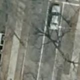
2023 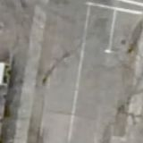
2025 green 0.0 → 0.0 · white 0.0381 → 0.0147
❓ painted facility, no visible markings Central Street — separated (source: osm)
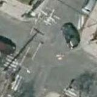
2023 2025 green 0.0011 → 0.0 · white 0.0114 → 0.0128
❓ painted facility, no visible markings Charles River Road — lane (source: osm)
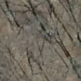
2023 2025 green 0.0 → 0.0 · white 0.0 → 0.0
❓ painted facility, no visible markings Charles Street — separated (source: osm)
2023 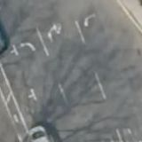
2025 green 0.0 → 0.0 · white 0.0364 → 0.0023
❓ painted facility, no visible markings Chestnut Hill Avenue — lane (source: osm)
2023 2025 green 0.0 → 0.0 · white 0.0009 → 0.0075
❓ painted facility, no visible markings Colchester Street — lane (source: osm)
green 0.0 → 0.0 · white 0.0081 → 0.0114
❓ painted facility, no visible markings Columbus Avenue — lane (source: osm)
2023 2025 green 0.0 → 0.0 · white 0.0 → 0.0
❓ painted facility, no visible markings Commonwealth Avenue — lane (source: osm)
2023 2025 green 0.0 → 0.0 · white 0.0044 → 0.0136
❓ painted facility, no visible markings Commonwealth Avenue — lane (source: osm)
2023 2025
green 0.0002 → 0.0 · white 0.0041 → 0.0145
❓ painted facility, no visible markings Commonwealth Avenue — lane (source: osm)
2023 2025 green 0.0 → 0.0008 · white 0.0006 → 0.0008
❓ painted facility, no visible markings Commonwealth Avenue — lane (source: osm)
2023 2025 green 0.0 → 0.0 · white 0.0013 → 0.003
❓ painted facility, no visible markings Concord Avenue — separated (source: osm)
2023 2025 green 0.0 → 0.0 · white 0.0259 → 0.008
❓ painted facility, no visible markings Congress Street — lane (source: osm)
2023 2025 green 0.0 → 0.0 · white 0.1098 → 0.0003
❓ painted facility, no visible markings Coolidge Avenue — lane (source: cambridge)
2023 2025 green 0.0 → 0.0 · white 0.0066 → 0.0023
❓ painted facility, no visible markings Dartmouth Street — separated (source: osm)
2023 2025 green 0.0 → 0.0 · white 0.1058 → 0.0083
❓ painted facility, no visible markings Everett Street — lane (source: osm)
2023 2025 green 0.0 → 0.0 · white 0.0 → 0.0
❓ painted facility, no visible markings Everett Street — lane (source: osm)
2023 2025
green 0.0002 → 0.0 · white 0.0002 → 0.0037
❓ painted facility, no visible markings Fellsway — lane (source: osm)
2023 2025 green 0.0 → 0.0 · white 0.0 → 0.0
❓ painted facility, no visible markings Fellsway — separated (source: osm)
2023 2025
green 0.0 → 0.0 · white 0.0 → 0.0
❓ painted facility, no visible markings Fellsway East — lane (source: osm)
2023 2025 green 0.0 → 0.0 · white 0.0 → 0.0
❓ painted facility, no visible markings Fellsway East — lane (source: osm)
2023 2025 green 0.0 → 0.0 · white 0.0 → 0.0
❓ painted facility, no visible markings First Avenue — separated (source: osm)
2023 2025 green 0.0 → 0.0 · white 0.0148 → 0.0088
❓ painted facility, no visible markings First Avenue — separated (source: osm)
2023 2025
green 0.0003 → 0.0 · white 0.0 → 0.0039
❓ painted facility, no visible markings Florence Street — lane (source: massdot)
2023 2025
green 0.0 → 0.0 · white 0.1767 → 0.0
❓ painted facility, no visible markings Florence Street — lane (source: massdot)
2023 2025 green 0.0 → 0.0 · white 0.0664 → 0.0
❓ painted facility, no visible markings Forsyth Street — lane (source: osm)
2023 2025
green 0.0002 → 0.0 · white 0.0 → 0.0019
❓ painted facility, no visible markings Fountain Terrace — lane (source: osm)
2023 2025 green 0.0 → 0.0 · white 0.0069 → 0.0073
❓ painted facility, no visible markings Galileo Galilei Way — separated (source: osm)
2023 2025 green 0.0 → 0.0 · white 0.0006 → 0.0
❓ painted facility, no visible markings Greenough Boulevard — lane (source: osm)
2023 2025
green 0.002 → 0.0 · white 0.0011 → 0.0014
❓ painted facility, no visible markings Guest Street — lane (source: osm)
2023 2025
green 0.0 → 0.0 · white 0.0345 → 0.0008
❓ painted facility, no visible markings Guest Street — separated (source: osm)
2023 2025 green 0.0 → 0.0 · white 0.0 → 0.0016
❓ painted facility, no visible markings Hampshire Street — separated (source: osm)
2023 2025 green 0.0 → 0.0002 · white 0.2191 → 0.0081
❓ painted facility, no visible markings Harrison Avenue — lane (source: osm)
2023 2025 green 0.0 → 0.0009 · white 0.0775 → 0.0027
❓ painted facility, no visible markings Harvard Avenue — lane (source: osm)
2023 2025
green 0.0 → 0.0 · white 0.0005 → 0.0006
❓ painted facility, no visible markings Harvard Avenue — lane (source: osm)
2023 2025
green 0.0017 → 0.0 · white 0.0 → 0.0105
❓ painted facility, no visible markings Harvard Street — lane (source: osm)
2023 2025 green 0.0 → 0.0037 · white 0.0477 → 0.0122
❓ painted facility, no visible markings Harvard Street — lane (source: osm)
2023 2025
green 0.0 → 0.0 · white 0.0289 → 0.0064
❓ painted facility, no visible markings Harvard Street — lane (source: osm)
2023 2025 green 0.0 → 0.0 · white 0.0034 → 0.0102
❓ painted facility, no visible markings Harvard Street — lane (source: osm)
2023 2025
green 0.0 → 0.002 · white 0.0378 → 0.0061
❓ painted facility, no visible markings Harvard Street — lane (source: osm)
2023 2025
green 0.0 → 0.0 · white 0.0234 → 0.0122
❓ painted facility, no visible markings Hereford Street — lane (source: osm)
2023 2025
green 0.0 → 0.0 · white 0.0802 → 0.013
❓ painted facility, no visible markings Holland Street — separated (source: osm)
2023 2025
green 0.0013 → 0.0 · white 0.0 → 0.0017
❓ painted facility, no visible markings Huron Avenue — lane (source: osm)
2023 2025 green 0.0 → 0.0 · white 0.022 → 0.0133
❓ painted facility, no visible markings Ivy Street — lane (source: osm)
2023 2025 green 0.0 → 0.0005 · white 0.0039 → 0.0017
❓ painted facility, no visible markings Ivy Street — lane (source: osm)
2023 2025 green 0.0 → 0.0022 · white 0.0 → 0.0023
❓ painted facility, no visible markings John F. Fitzgerald Surface Road — lane (source: osm)
2023 2025
green 0.0 → 0.0 · white 0.0638 → 0.0
❓ painted facility, no visible markings John F. Kennedy Street — lane (source: osm)
2023 2025 green 0.0 → 0.0 · white 0.0095 → 0.0084
❓ painted facility, no visible markings Kelton Street — lane (source: osm)
2023 2025
green 0.0 → 0.0 · white 0.0464 → 0.0086
❓ painted facility, no visible markings Kilby Street — lane (source: massdot)
2023 2025
green 0.0002 → 0.0066 · white 0.1417 → 0.0
❓ painted facility, no visible markings Kilmarnock Street — lane (source: osm)
2023 2025
green 0.0 → 0.0006 · white 0.0194 → 0.0
❓ painted facility, no visible markings Kneeland Street — separated (source: osm)
2023 2025 green 0.0008 → 0.0 · white 0.0898 → 0.0
❓ painted facility, no visible markings Lake Street — lane (source: osm)
2023 2025
green 0.0 → 0.0 · white 0.0 → 0.0
❓ painted facility, no visible markings Lake Street — lane (source: osm)
2023 2025
green 0.0 → 0.0 · white 0.0017 → 0.0
❓ painted facility, no visible markings Linskey Way — lane (source: osm)
2023 2025 green 0.0 → 0.0 · white 0.0 → 0.0
❓ painted facility, no visible markings Linskey Way — lane (source: osm)
2023 2025 green 0.0 → 0.0 · white 0.0989 → 0.0
❓ painted facility, no visible markings Longwood Avenue — lane (source: osm)
2023 2025 green 0.0 → 0.0 · white 0.0286 → 0.0064
❓ painted facility, no visible markings Main Street — lane (source: osm)
2023 2025 green 0.0 → 0.0022 · white 0.0 → 0.0053
❓ painted facility, no visible markings Main Street — separated (source: osm)
2023 2025 green 0.0 → 0.0 · white 0.0 → 0.0
❓ painted facility, no visible markings Main Street — lane (source: osm)
2023 2025 green 0.0 → 0.0 · white 0.2134 → 0.013
❓ painted facility, no visible markings Main Street — lane (source: osm)
2023 2025
green 0.0 → 0.0 · white 0.0017 → 0.0102
❓ painted facility, no visible markings Massachusetts Avenue — separated (source: osm)
2023 2025 green 0.0005 → 0.0 · white 0.0544 → 0.0002
❓ painted facility, no visible markings Massachusetts Avenue — separated (source: osm)
2023 2025 green 0.0 → 0.0 · white 0.0436 → 0.0056
❓ painted facility, no visible markings Massachusetts Avenue — separated (source: osm)
2023 2025 green 0.0 → 0.0 · white 0.065 → 0.012
❓ painted facility, no visible markings Massachusetts Avenue — separated (source: osm)
green 0.0 → 0.0 · white 0.0153 → 0.0
❓ painted facility, no visible markings Massachusetts Avenue — lane (source: osm)
green 0.0 → 0.0 · white 0.0033 → 0.0056
❓ painted facility, no visible markings Massachusetts Avenue — separated (source: osm)
green 0.0 → 0.0008 · white 0.0664 → 0.0
❓ painted facility, no visible markings Medford Street — separated (source: osm)
green 0.0 → 0.0 · white 0.1322 → 0.0
❓ painted facility, no visible markings Mount Auburn Street — lane (source: osm)
green 0.0 → 0.0 · white 0.0009 → 0.0008
❓ painted facility, no visible markings Mount Auburn Street — lane (source: osm)
green 0.0 → 0.0 · white 0.0041 → 0.0133
❓ painted facility, no visible markings Mountfort Street — lane (source: osm)
green 0.0 → 0.0 · white 0.0077 → 0.0
❓ painted facility, no visible markings Naples Road — lane (source: osm)
green 0.0 → 0.0 · white 0.0014 → 0.0005
❓ painted facility, no visible markings New Cypher Street — separated (source: osm)
green 0.0 → 0.0 · white 0.0 → 0.0077
❓ painted facility, no visible markings North Beacon Street — separated (source: osm)
green 0.0 → 0.0 · white 0.0 → 0.0
❓ painted facility, no visible markings North Beacon Street — lane (source: osm)
green 0.0 → 0.0 · white 0.0544 → 0.0058
❓ painted facility, no visible markings North First Street — separated (source: osm)
green 0.0 → 0.0 · white 0.0617 → 0.0
❓ painted facility, no visible markings Pearl Street — lane (source: osm)
green 0.0 → 0.0 · white 0.047 → 0.0131
❓ painted facility, no visible markings Pleasant Street — lane (source: osm)
green 0.0 → 0.0 · white 0.0103 → 0.0
❓ painted facility, no visible markings Saint Paul Street — lane (source: osm)
green 0.0 → 0.0 · white 0.0016 → 0.0
❓ painted facility, no visible markings Saint Paul Street — lane (source: osm)
green 0.0 → 0.0 · white 0.0148 → 0.0083
❓ painted facility, no visible markings Saint Paul Street — lane (source: osm)
green 0.0 → 0.0 · white 0.0331 → 0.0
❓ painted facility, no visible markings Shore Drive — separated (source: osm)
green 0.0 → 0.0 · white 0.068 → 0.0133
❓ painted facility, no visible markings Somerville Avenue — lane (source: osm)
green 0.0 → 0.0 · white 0.0 → 0.0
❓ painted facility, no visible markings Sparks Street — lane (source: osm)
green 0.0366 → 0.003 · white 0.0005 → 0.0011
❓ painted facility, no visible markings Staniford Street — separated (source: osm)
green 0.0 → 0.0 · white 0.0 → 0.0108
❓ painted facility, no visible markings Staniford Street — separated (source: osm)
green 0.0 → 0.0 · white 0.1109 → 0.0142
❓ painted facility, no visible markings Staniford Street — separated (source: osm)
green 0.0 → 0.0 · white 0.0 → 0.0097
❓ painted facility, no visible markings Stuart Street — lane (source: osm)
green 0.0 → 0.0039 · white 0.0044 → 0.0
❓ painted facility, no visible markings Summer Street — separated (source: osm)
green 0.0 → 0.0 · white 0.0647 → 0.0078
❓ painted facility, no visible markings Tremont Street — separated (source: osm)
green 0.0003 → 0.0 · white 0.0658 → 0.0
❓ painted facility, no visible markings Warren Street — lane (source: osm)
green 0.0003 → 0.0006 · white 0.0278 → 0.0117
❓ painted facility, no visible markings Washington Street — separated (source: osm)
green 0.0008 → 0.0084 · white 0.1013 → 0.0008
❓ painted facility, no visible markings Webster Avenue — lane (source: osm)
green 0.0 → 0.0 · white 0.0781 → 0.002
❓ painted facility, no visible markings Western Avenue — separated (source: osm)
green 0.0 → 0.0 · white 0.108 → 0.0091
❓ painted facility, no visible markings Western Avenue — separated (source: osm)
green 0.0 → 0.0 · white 0.0759 → 0.0009
❓ painted facility, no visible markings Western Avenue — separated (source: osm)
green 0.0 → 0.0 · white 0.0 → 0.0077
❓ painted facility, no visible markings Windsor Street — separated (source: osm)
green 0.0 → 0.0 · white 0.0019 → 0.0052